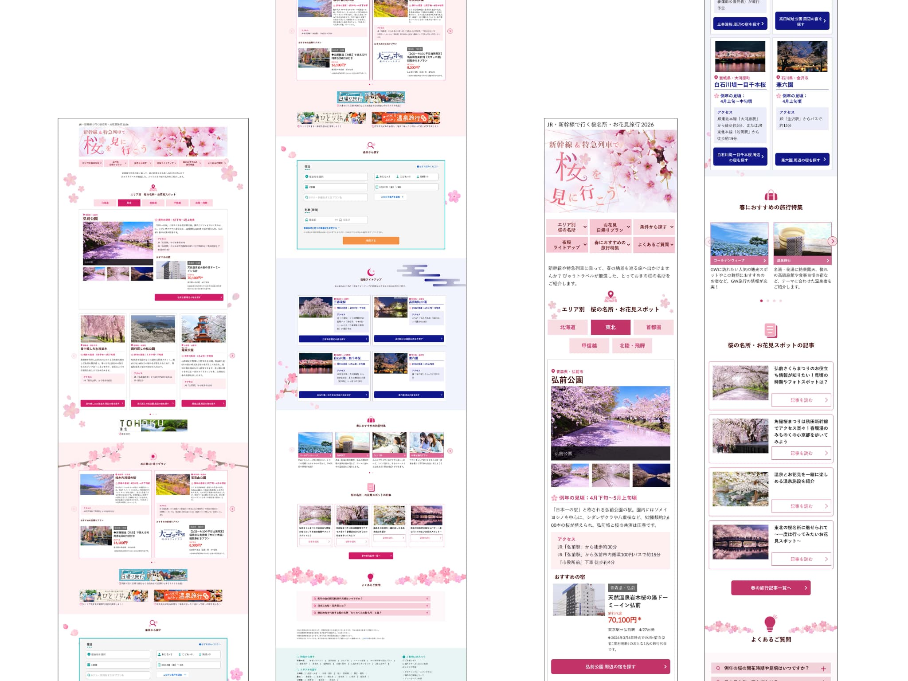
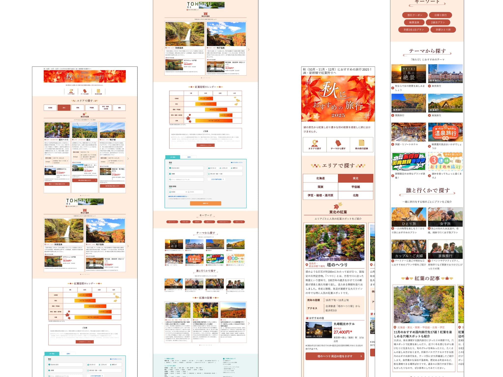

ターゲットと訴求軸
最も多く閲覧している30代女性をメインターゲットに設定。ユーザーの持つ「なんとなく旅行に行きたい気持ち」を高めるために、その季節の美しさがパッと思い浮かぶようなメインビジュアルを目指した。
Seasonal Feature Page Design & Implementation
Overview
クライアント
旅行予約サービス 大手旅行会社Webサイト
制作期間
桜特集：2026.01 — 02 秋特集：2025.08
担当範囲
デザイン / コーディング AEM実装・レスポンシブ対応
About
旅行需要の高まる季節に合わせた特集ページの制作を担当。ディレクターのワイヤーフレームをもとにデザインを起こし、AEM（Adobe Experience Manager）による実装まで一貫して担当した。
自社サイトのトンマナを踏襲しながら、季節ごとのビジュアル調整とコンテンツ更新を繰り返し行う中で、大規模CMSを用いた実務フローを習得。
Process
ワイヤーフレーム確認・要件整理
ディレクター作成のワイヤーをもとに、ユーザーが迷わない設計を一番に考え、コンテンツの順番等の整理をした。
デザインカンプ制作
Figmaにてデザインカンプを作成。季節感の出し方と情報量のバランスを整理。メインビジュアルの選定・配色の調整・カードレイアウトの検討を行った。
HTML / CSS コーディング
既存サイトのガイドラインに沿ってコーディング。スマートフォン・PCの各種デバイスにて視認性確保を実施。
AEM実装・公開
Adobe Experience Managerのコンポーネントを活用し実装。ディレクターを含む複数の関係者レビューを経て公開。
Design


Design Thinking
最も多く閲覧している30代女性をメインターゲットに設定。ユーザーの持つ「なんとなく旅行に行きたい気持ち」を高めるために、その季節の美しさがパッと思い浮かぶようなメインビジュアルを目指した。
掲載情報が多いページのため、カードレイアウトを採用し視認性と回遊性を確保。ユーザーがエリア別・目的別に旅行プランを見つけやすい導線設計を意識した。
季節の特集ページは毎年更新されるため、ブランドの一貫性を崩さず季節によって表情を変えるデザインを追求。アイコンイラスト・配色・写真選定・余白の取り方で季節感を表現した。
Reflection
大規模サービスの実務を通じて、個人制作では経験できない制約の中でのデザインを経験した。ブランドガイドライン・CMSコンポーネントの仕様・複数関係者のレビューフローという条件の中でも、ユーザーにとって見やすく・行動しやすいページをつくるために何ができるかを思考してコーディングまで臨んだ。
またこの実装フローの中では、ワイヤーフレームをそのままデザインするのではなくユーザーが迷わない設計かを話し合う機会も得ることができた。制約がある中でもユーザーを第一に考える姿勢を持てたことが大きな財産となっている。